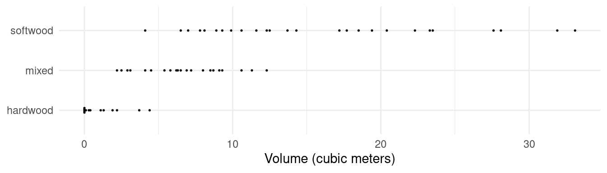
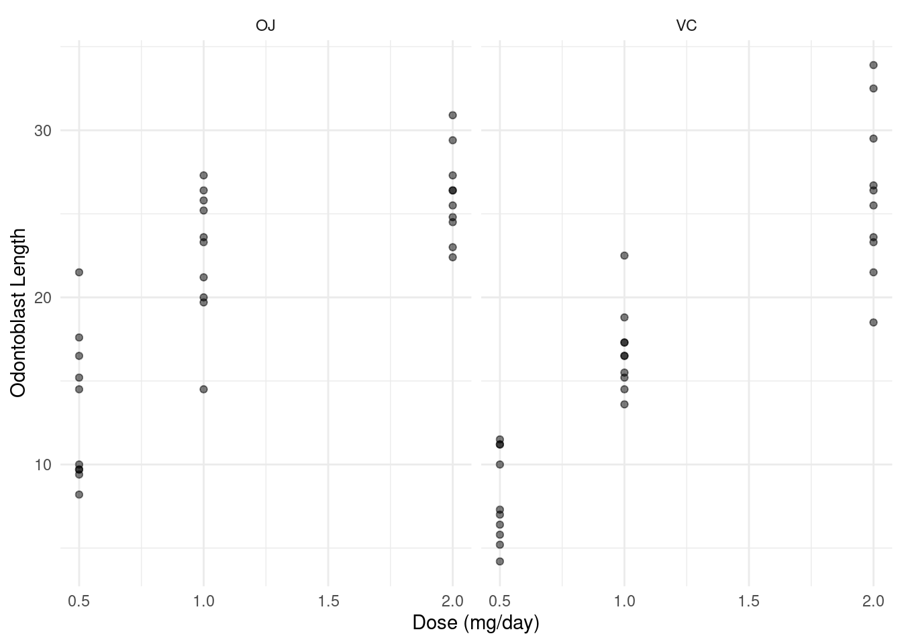
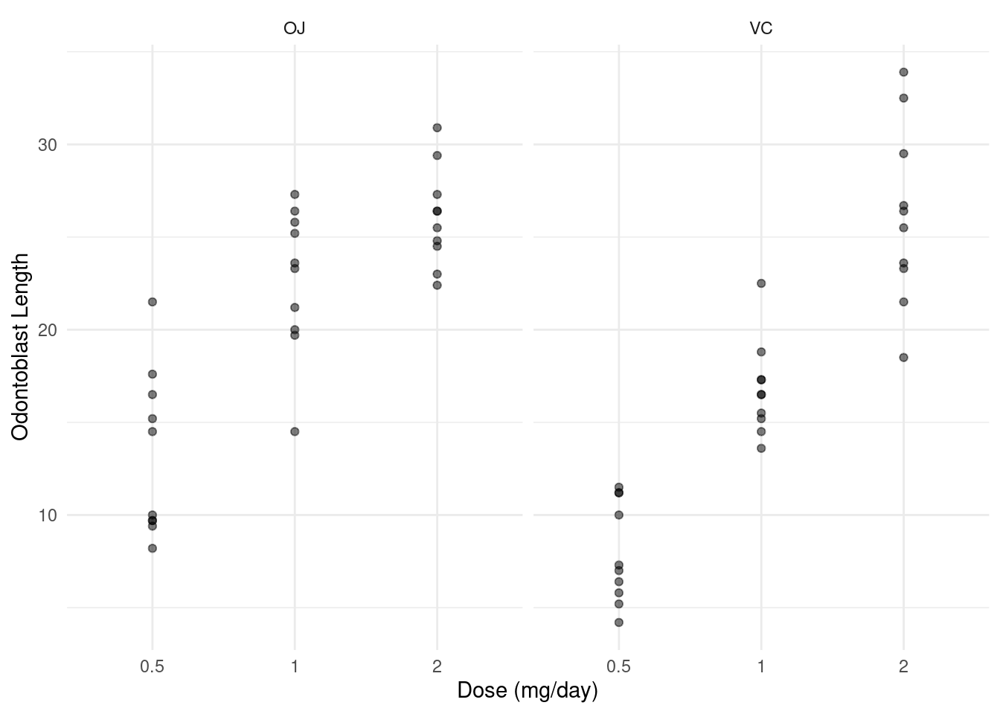
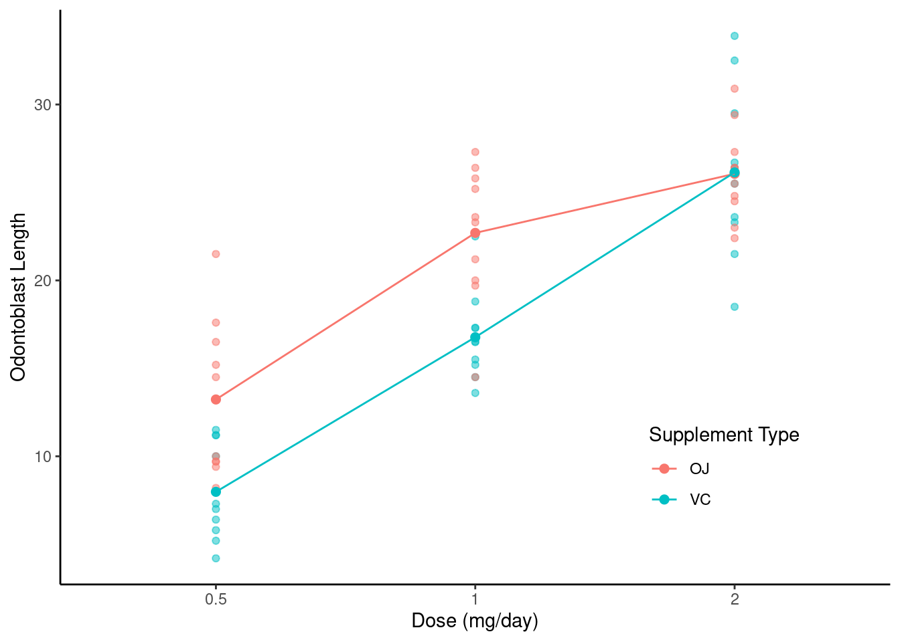
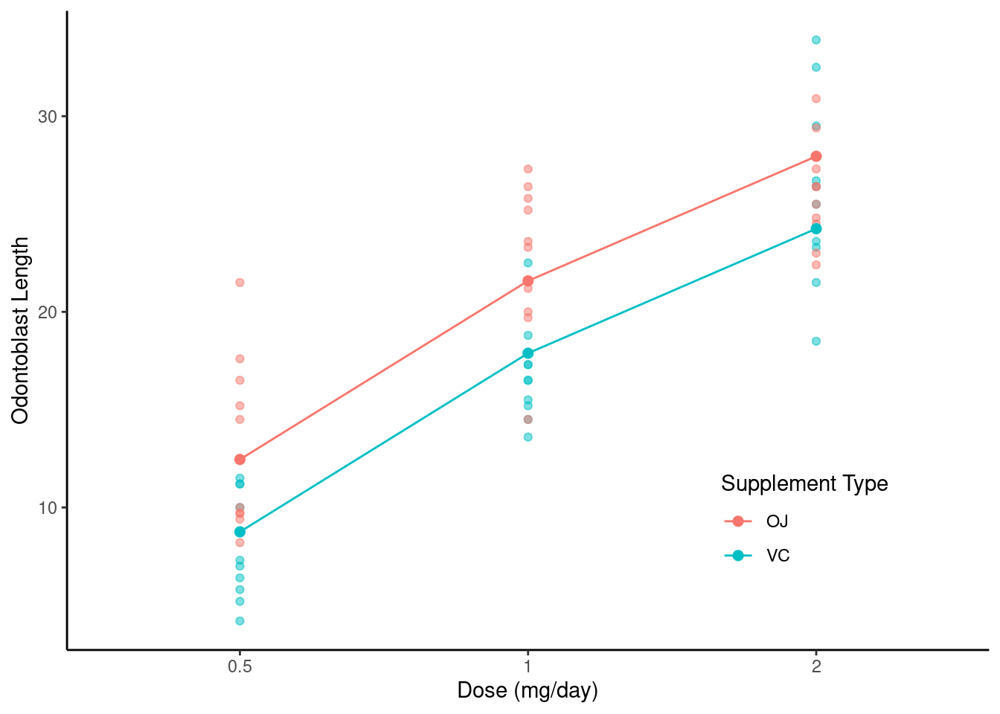

You can also download a PDF copy of this lecture.
A marginal mean is effectively an average of expected responses. The emmeans package is particularly useful for making inferences about marginal means.
library(trtools)
library(emmeans)
Attaching package: 'emmeans'The following objects are masked from 'package:trtools':
contrast, neuralgiaWarning: The emmeans package
contains a function called contrast which is not the same
as the function of the same name in the trtools
package, resulting in a namespace conflict if both packages are loaded.
If you have both packages loaded in a given session, use
trtools::contrast and emmeans::contrast to
refer to a given function.
Example: Consider again the data from the platy fish study.
m <- lm(Percentage ~ Pair, data = Sleuth3::case0602)
summary(m)$coefficients Estimate Std. Error t value Pr(>|t|)
(Intercept) 56.406 3.864 14.5965 5.208e-24
PairPair2 4.479 5.657 0.7919 4.308e-01
PairPair3 6.023 5.384 1.1187 2.667e-01
PairPair4 10.594 5.657 1.8727 6.485e-02
PairPair5 7.805 6.441 1.2118 2.292e-01
PairPair6 6.929 5.657 1.2250 2.243e-01We see that there are indicator variables for male pairs 2-6. The
model can be written as \[
E(Y_i) =
\begin{cases}
\beta_0, & \text{if the $i$-th observation was from the first
male pair}, \\
\beta_0 + \beta_1, & \text{if the $i$-th observation was from
the second male pair}, \\
\beta_0 + \beta_2, & \text{if the $i$-th observation was from
the third male pair}, \\
\beta_0 + \beta_3, & \text{if the $i$-th observation was from
the fourth male pair}, \\
\beta_0 + \beta_4, & \text{if the $i$-th observation was from
the fifth male pair}, \\
\beta_0 + \beta_5, & \text{if the $i$-th observation was from
the sixth male pair}. \\
\end{cases}
\] We can use contrast to estimate the expected
response for each pair.
contrast(m, a = list(Pair = paste("Pair", 1:6, sep = "")),
cnames = paste("Pair", 1:6, sep = "")) estimate se lower upper tvalue df pvalue
Pair1 56.41 3.864 48.71 64.10 14.60 78 5.208e-24
Pair2 60.89 4.131 52.66 69.11 14.74 78 2.990e-24
Pair3 62.43 3.749 54.97 69.89 16.65 78 2.114e-27
Pair4 67.00 4.131 58.78 75.22 16.22 78 1.052e-26
Pair5 64.21 5.152 53.95 74.47 12.46 78 3.039e-20
Pair6 63.34 4.131 55.11 71.56 15.33 78 3.006e-25Note how I used a shortcut to specify the pairs.
paste("Pair", 1:6, sep = "")[1] "Pair1" "Pair2" "Pair3" "Pair4" "Pair5" "Pair6"This can also be done using the emmeans function from
the package emmeans.
library(emmeans)
emmeans(m, ~ Pair) Pair emmean SE df lower.CL upper.CL
Pair1 56.4 3.86 78 48.7 64.1
Pair2 60.9 4.13 78 52.7 69.1
Pair3 62.4 3.75 78 55.0 69.9
Pair4 67.0 4.13 78 58.8 75.2
Pair5 64.2 5.15 78 54.0 74.5
Pair6 63.3 4.13 78 55.1 71.6
Confidence level used: 0.95 Denote the six expected responses (one for each pair) as \[\begin{align*}
\mu_1 & = \beta_0, \\
\mu_2 & = \beta_0 + \beta_1, \\
\mu_3 & = \beta_0 + \beta_2, \\
\mu_4 & = \beta_0 + \beta_3, \\
\mu_5 & = \beta_0 + \beta_4, \\
\mu_6 & = \beta_0 + \beta_5.
\end{align*}\] One marginal mean would be the average expected
response across the pairs. This could be written as \[
\mu = \frac{\mu_1 + \mu_2 + \mu_3 + \mu_4 + \mu_5 + \mu_6}{6} =
\beta_0 + \tfrac{1}{6}\beta_1 + \tfrac{1}{6}\beta_2 +
\tfrac{1}{6}\beta_3 + \tfrac{1}{6}\beta_4 + \tfrac{1}{6}\beta_5.
\] We can estimate this quantity with lincon.
lincon(m, a = c(1,1/6,1/6,1/6,1/6,1/6)) estimate se lower upper tvalue df pvalue
(1,1/6,1/6,1/6,1/6,1/6),0 62.38 1.722 58.95 65.81 36.23 78 1.501e-50We can also use emmeans.
emmeans(m, ~ 1) 1 emmean SE df lower.CL upper.CL
overall 62.4 1.72 78 59 65.8
Results are averaged over the levels of: Pair
Confidence level used: 0.95 Note that we can use the confidence interval to test the null
hypothesis that \(\mu\) = 50. For a
test statistic and p-value for this test we could write this as \[
\mu = 50 \Leftrightarrow \beta_0 + \tfrac{1}{6}\beta_1 +
\tfrac{1}{6}\beta_2 + \tfrac{1}{6}\beta_3 + \tfrac{1}{6}\beta_4 +
\tfrac{1}{6}\beta_5 = 50 \Leftrightarrow \beta_0 + \tfrac{1}{6}\beta_1 +
\tfrac{1}{6}\beta_2 + \tfrac{1}{6}\beta_3 + \tfrac{1}{6}\beta_4 +
\tfrac{1}{6}\beta_5 - 50 = 0.
\] Here is how we can do that with lincon.
lincon(m, a = c(1,1/6,1/6,1/6,1/6,1/6), b = -50) estimate se lower upper tvalue df pvalue
(1,1/6,1/6,1/6,1/6,1/6),-50 12.38 1.722 8.95 15.81 7.189 78 3.439e-10Here is how we do it with emmeans.
emmeans(m, ~ 1, offset = -50, infer = TRUE) 1 emmean SE df lower.CL upper.CL t.ratio p.value
overall 12.4 1.72 78 8.95 15.8 7.189 <.0001
Results are averaged over the levels of: Pair
Confidence level used: 0.95 By not listing an explanatory variable on the right-hand
side of ~, we are asking that emmeans average
over that explanatory variable. Also note that the argument
infer = TRUE makes the emmeans function
provide both confidence intervals as well as tests.
Note: If we just want to know whether or not we would reject the null hypothesis that \(\mu = 50\) we can also just look at the confidence interval for \(\mu\).
Example: Consider the following data from a stratified random sampling using 0.1ha circular plots from three strata: softwood, mixed, and hardwood.
library(trtools) # contains the bole data frame
p <- ggplot(bole, aes(x = stratum, y = volume)) + theme_minimal() +
geom_dotplot(binaxis = "y", stackdir = "center", binwidth = 0.1) +
labs(y = "Volume (cubic meters)", x = NULL) + coord_flip()
plot(p) Here is a basic linear model for these data.
m <- lm(volume ~ stratum, data = bole)
summary(m)$coefficients Estimate Std. Error t value Pr(>|t|)
(Intercept) 1.185 1.588 0.7457 4.589e-01
stratummixed 5.549 2.021 2.7452 8.075e-03
stratumsoftwood 14.954 1.946 7.6864 2.284e-10So the model is \(E(Y_i) = \beta_0 +
\beta_1 x_{i1} + \beta_2 x_{i2}\) where \[
x_{i1} =
\begin{cases}
1, & \text{if the $i$-th observation is from the mixed
stratum}, \\
0, & \text{otherwise},
\end{cases}
\] and \[
x_{i2} =
\begin{cases}
1, & \text{if the $i$-th observation is from the softwood
stratum}, \\
0, & \text{otherwise}.
\end{cases}
\] So we can write the model case-wise as \[
E(Y_i) =
\begin{cases}
\beta_0, & \text{if the $i$-th observation is from the
hardwood stratum}, \\
\beta_0 + \beta_1, & \text{if the $i$-th observation is from
the mixed stratum}, \\
\beta_0 + \beta_2, & \text{if the $i$-th observation is from
the softwood stratum}.
\end{cases}
\] The areas of the hardwood, mixed, and softwood strata are
32435ha, 17250ha, and 42541ha, respectively, and the total area is
92226ha. Let \(\mu_h\), \(\mu_m\), and \(\mu_s\) denote the expected volume of a
0.1ha plot sampled from the hardwood, mixed, and softwood strata,
respectively. So we have that \[
\mu_h = \beta_0, \ \ \mu_m = \beta_0 + \beta_1, \ \ \mu_s = \beta_0 +
\beta_2.
\] These are also the mean volume per 0.1ha for each stratum. The
mean volume per 0.1ha for the whole forest is then the weighted average
\[
\mu = \tfrac{32435}{92226}\mu_h + \tfrac{17250}{92226}\mu_m +
\tfrac{42541}{92226}\mu_s =
\beta_0 + \tfrac{17250}{92226}\beta_1 + \tfrac{42541}{92226}\beta_2.
\] We can use lincon or emmeans to make
inferences.
lincon(m, a = c(1, 17250/92226, 42541/92226)) estimate se lower upper tvalue df pvalue
(1,1094/5849,2239/4854),0 9.12 0.797 7.524 10.72 11.44 57 2.136e-16Note: The coefficients that are output by lincon are the
same but simplified.
emmeans(m, ~ 1, weights = c(32436/92226, 17250/92226, 42541/92226)) 1 emmean SE df lower.CL upper.CL
overall 9.12 0.797 57 7.52 10.7
Results are averaged over the levels of: stratum
Confidence level used: 0.95 Note that it is important that the weights are specified in the correct order. There area a couple ways to check this.
levels(bole$stratum)[1] "hardwood" "mixed" "softwood"emmeans(m, ~ 1, weights = "show.levels")emmeans are obtained by averaging over these factor combinations stratum
1 hardwood
2 mixed
3 softwoodThe emmeans function can also be used to make inferences
about the differences between pairs of expected responses.
contrast(emmeans(m, ~ stratum), method = "pairwise", adjust = "none") contrast estimate SE df t.ratio p.value
hardwood - mixed -5.55 2.02 57 -2.745 0.0081
hardwood - softwood -14.95 1.95 57 -7.686 <.0001
mixed - softwood -9.40 1.68 57 -5.597 <.0001You can also use contrast but it is a bit more
tedious.
trtools::contrast(m,
a = list(stratum = c("hardwood","hardwood","mixed")),
b = list(stratum = c("mixed","softwood","softwood")),
cnames = c("hardwood - mixed","hardwood - softwood","mixed - softwood")) estimate se lower upper tvalue df pvalue
hardwood - mixed -5.549 2.021 -9.596 -1.501 -2.745 57 8.075e-03
hardwood - softwood -14.954 1.946 -18.850 -11.058 -7.686 57 2.284e-10
mixed - softwood -9.405 1.680 -12.770 -6.040 -5.597 57 6.510e-07The adjust = "none" option for pairs
specifies that no adjustment be made to confidence intervals or tests
for the family-wise Type I error rate.1
Consider data from a randomized experiment with guinea pigs administered one of three doses of vitamin C (0.5, 1, or 2 mg/day) via one of two supplement methods: orange juice (OJ) or ascorbic acid (VC).
p <- ggplot(ToothGrowth, aes(x = dose, y = len)) +
geom_point(alpha = 0.5) + facet_wrap(~supp) +
labs(x = "Dose (mg/day)", y = "Odontoblast Length") + theme_minimal()
plot(p) Here we are going to model dose as a categorical variable so we need to coerce it to a factor. Perhaps the safest approach is to create a new variable.
ToothGrowth$dosef <- factor(ToothGrowth$dose)Note: Whether a variable is a numeric, a factor, or something else
can be seen use str (for “structure”).
str(ToothGrowth)'data.frame': 60 obs. of 4 variables:
$ len : num 4.2 11.5 7.3 5.8 6.4 10 11.2 11.2 5.2 7 ...
$ supp : Factor w/ 2 levels "OJ","VC": 2 2 2 2 2 2 2 2 2 2 ...
$ dose : num 0.5 0.5 0.5 0.5 0.5 0.5 0.5 0.5 0.5 0.5 ...
$ dosef: Factor w/ 3 levels "0.5","1","2": 1 1 1 1 1 1 1 1 1 1 ...Notice that ggplot responds differently.
summary(ToothGrowth) len supp dose dosef
Min. : 4.2 OJ:30 Min. :0.50 0.5:20
1st Qu.:13.1 VC:30 1st Qu.:0.50 1 :20
Median :19.2 Median :1.00 2 :20
Mean :18.8 Mean :1.17
3rd Qu.:25.3 3rd Qu.:2.00
Max. :33.9 Max. :2.00 p <- ggplot(ToothGrowth, aes(x = dosef, y = len)) +
geom_point(alpha = 0.5) + facet_wrap(~supp) +
labs(x = "Dose (mg/day)", y = "Odontoblast Length") + theme_minimal()
plot(p) Now consider the following linear model.
m <- lm(len ~ dosef + supp + dosef:supp, data = ToothGrowth)
summary(m)$coefficients Estimate Std. Error t value Pr(>|t|)
(Intercept) 13.23 1.148 11.5208 3.603e-16
dosef1 9.47 1.624 5.8312 3.176e-07
dosef2 12.83 1.624 7.9002 1.430e-10
suppVC -5.25 1.624 -3.2327 2.092e-03
dosef1:suppVC -0.68 2.297 -0.2961 7.683e-01
dosef2:suppVC 5.33 2.297 2.3207 2.411e-02The model is \[ E(Y_i) = \beta_0 + \beta_1 x_{i1} + \beta_2 x_{i2} + \beta_3 x_{i3} + \beta_4 x_{i4} + \beta_5 x_{i5}, \] where \[ x_{i1} = \begin{cases} 1, & \text{if dose is 1 mg/day}, \\ 0, & \text{otherwise}, \end{cases} \] \[ x_{i2} = \begin{cases} 1, & \text{if dose is 2 mg/day}, \\ 0, & \text{otherwise}, \end{cases} \] \[ x_{i3} = \begin{cases} 1, & \text{if supplement type is VC} \\ 0, & \text{otherwise}, \end{cases} \] \[ x_{i4} = x_{i1}x_{i3} = \begin{cases} 1, & \text{if dose is 1 mg/day and supplement type is VC}, \\ 0, & \text{otherwise}, \end{cases} \] \[ x_{i5} = x_{i2}x_{i3} = \begin{cases} 1, & \text{if dose is 2 mg/day and supplement type is VC}, \\ 0, & \text{otherwise}. \end{cases} \]
We can write this model case-wise. \[ E(Y_i) = \begin{cases} \beta_0, & \text{if dose is 0.5 mg/day and supplement type is OJ}, \\ \beta_0 + \beta_1, & \text{if dose is 1 mg/day and supplement type is OJ}, \\ \beta_0 + \beta_2, & \text{if dose is 2 mg/day and supplement type is OJ}, \\ \beta_0 + \beta_3, & \text{if dose is 0.5 mg/day and supplement type is VC}, \\ \beta_0 + \beta_1 + \beta_3 + \beta_4, & \text{if dose is 1 mg/day and supplement type is VC}, \\ \beta_0 + \beta_2 + \beta_3 + \beta_5, & \text{if dose is 2 mg/day and supplement type is VC}. \\ \end{cases} \] And we can visualize it.
d <- expand.grid(dosef = levels(ToothGrowth$dosef), supp = levels(ToothGrowth$supp))
d$yhat <- predict(m, newdata = d)
p <- ggplot(ToothGrowth, aes(x = dosef, y = len, color = supp)) +
geom_point(alpha = 0.5) + theme_classic() +
theme(legend.position = c(0.8,0.2)) +
geom_point(aes(y = yhat), size = 2, data = d) +
geom_line(aes(y = yhat, group = supp), data = d) +
labs(x = "Dose (mg/day)", y = "Odontoblast Length", color = "Supplement Type")
plot(p)
We might want to compare the two supplement types at each dose level.
These are sometimes called simple effects. We can do this using
contrast.
trtools::contrast(m,
a = list(supp = "OJ", dosef = c("0.5","1","2")),
b = list(supp = "VC", dosef = c("0.5","1","2")),
cnames = c("OJ-VC @ 0.5 mg/day","OJ-VC @ 1.0 mg/day","OJ-VC @ 2.0 mg/day")) estimate se lower upper tvalue df pvalue
OJ-VC @ 0.5 mg/day 5.25 1.624 1.994 8.506 3.23273 54 0.0020925
OJ-VC @ 1.0 mg/day 5.93 1.624 2.674 9.186 3.65144 54 0.0005897
OJ-VC @ 2.0 mg/day -0.08 1.624 -3.336 3.176 -0.04926 54 0.9608934We can also do this use emmeans. First note that we can
use emmeans to also estimate the expected response for each
level of supp within each level of dosef.
emmeans(m, ~ supp | dosef)dosef = 0.5:
supp emmean SE df lower.CL upper.CL
OJ 13.23 1.15 54 10.93 15.5
VC 7.98 1.15 54 5.68 10.3
dosef = 1:
supp emmean SE df lower.CL upper.CL
OJ 22.70 1.15 54 20.40 25.0
VC 16.77 1.15 54 14.47 19.1
dosef = 2:
supp emmean SE df lower.CL upper.CL
OJ 26.06 1.15 54 23.76 28.4
VC 26.14 1.15 54 23.84 28.4
Confidence level used: 0.95 We can use pairs to make inferences about the
differences between levels of supp within each level of
dosef.
pairs(emmeans(m, ~ supp | dosef), adjust = "none", infer = TRUE)dosef = 0.5:
contrast estimate SE df lower.CL upper.CL t.ratio p.value
OJ - VC 5.25 1.62 54 1.99 8.51 3.233 0.0021
dosef = 1:
contrast estimate SE df lower.CL upper.CL t.ratio p.value
OJ - VC 5.93 1.62 54 2.67 9.19 3.651 0.0006
dosef = 2:
contrast estimate SE df lower.CL upper.CL t.ratio p.value
OJ - VC -0.08 1.62 54 -3.34 3.18 -0.049 0.9609
Confidence level used: 0.95 The “main effect” of supplement method concerns \(\mu_{\text{OJ}}\) and \(\mu_{\text{VC}}\), defined as \[
\mu_{\text{OJ}} = \frac{\mu_{\text{OJ,0.5}} + \mu_{\text{OJ},1.0} +
\mu_{\text{OJ},2.0}}{3}, \ \ \ \mu_{\text{VC}} =
\frac{\mu_{\text{VC,0.5}} + \mu_{\text{VC},1.0} +
\mu_{\text{OJ},2.0}}{3}.
\] So \(\mu_{\text{OJ}}\) and
\(\mu_{\text{VC}}\) are the
marginal means for supp, averaging over levels of
dose.
emmeans(m, ~ supp) supp emmean SE df lower.CL upper.CL
OJ 20.7 0.663 54 19.3 22.0
VC 17.0 0.663 54 15.6 18.3
Results are averaged over the levels of: dosef
Confidence level used: 0.95 Inference for the main effect \(\mu_{\text{OJ}} - \mu_{\text{VC}}\) can then be obtained as follows.
pairs(emmeans(m, ~ supp), infer = TRUE) contrast estimate SE df lower.CL upper.CL t.ratio p.value
OJ - VC 3.7 0.938 54 1.82 5.58 3.946 0.0002
Results are averaged over the levels of: dosef
Confidence level used: 0.95 This main effect is simply a single linear function of \(\beta_0, \beta_1, \dots, \beta_5\). From the case-wise representation of the model, \[ E(Y_i) = \begin{cases} \beta_0, & \text{if dose is 0.5 mg/day and supplement type is OJ}, \\ \beta_0 + \beta_1, & \text{if dose is 1 mg/day and supplement type is OJ}, \\ \beta_0 + \beta_2, & \text{if dose is 2 mg/day and supplement type is OJ}, \\ \beta_0 + \beta_3, & \text{if dose is 0.5 mg/day and supplement type is VC}, \\ \beta_0 + \beta_1 + \beta_3 + \beta_4, & \text{if dose is 1 mg/day and supplement type is VC}, \\ \beta_0 + \beta_2 + \beta_3 + \beta_5, & \text{if dose is 2 mg/day and supplement type is VC}, \\ \end{cases} \] we have that \(\mu_{\text{OJ,0.5}} = \beta_0\), \(\mu_{\text{OJ,1.0}} = \beta_0 + \beta_1\), \(\mu_{\text{OJ,2.0}} = \beta_0 + \beta_3\), \(\mu_{\text{VC,0.5}} = \beta_0 + \beta_3\), \(\mu_{\text{VC,1.0}} = \beta_0 + \beta_1 + \beta_3 + \beta_4\), \(\mu_{\text{VC,2.0}} = \beta_0 + \beta_1 + \beta_3 + \beta_5\). So, we can write this as \[ \mu_{\text{OJ}} - \mu_{\text{VC}} = \frac{\mu_{\text{OJ,0.5}} + \mu_{\text{OJ},1.0} + \mu_{\text{OJ},2.0}}{3} - \frac{\mu_{\text{VC,0.5}} + \mu_{\text{VC},1.0} + \mu_{\text{OJ},2.0}}{3} = -\beta_3 - \frac{1}{3}\beta_4 - \frac{1}{3}\beta_5. \]
lincon(m, a = c(0,0,0,-1,-1/3,-1/3)) estimate se lower upper tvalue df pvalue
(0,0,0,-1,-1/3,-1/3),0 3.7 0.9376 1.82 5.58 3.946 54 0.0002312Clearly using emmeans is much less tedious!
The “main effect” of dose concerns differences among the marginal means of dose defined as \(\mu_{0.5}\), \(\mu_{1}\) and \(\mu_{2}\) where \[ \mu_{0.5} = \frac{\mu_{\text{OJ},0.5} + \mu_{\text{VC,0.5}}}{2}, \ \ \ \mu_1 = \frac{\mu_{\text{OJ},1} + \mu_{\text{VC,1}}}{2}, \ \ \ \mu_2 = \frac{\mu_{\text{OJ},2} + \mu_{\text{VC,2}}}{2}. \]
emmeans(m, ~ dosef) dosef emmean SE df lower.CL upper.CL
0.5 10.6 0.812 54 8.98 12.2
1 19.7 0.812 54 18.11 21.4
2 26.1 0.812 54 24.47 27.7
Results are averaged over the levels of: supp
Confidence level used: 0.95 pairs(emmeans(m, ~ dosef), adjust = "none") contrast estimate SE df t.ratio p.value
dosef0.5 - dosef1 -9.13 1.15 54 -7.951 <.0001
dosef0.5 - dosef2 -15.49 1.15 54 -13.493 <.0001
dosef1 - dosef2 -6.37 1.15 54 -5.543 <.0001
Results are averaged over the levels of: supp pairs(emmeans(m, ~ dosef), reverse = TRUE, adjust = "none") contrast estimate SE df t.ratio p.value
dosef1 - dosef0.5 9.13 1.15 54 7.951 <.0001
dosef2 - dosef0.5 15.49 1.15 54 13.493 <.0001
dosef2 - dosef1 6.37 1.15 54 5.543 <.0001
Results are averaged over the levels of: supp In ANOVA tables the test of the “main effect” is the (joint) null
hypothesis that all pairwise differences are zero. For the variable dose
the null hypothesis is \(\mu_{0.5} = \mu_{1} =
\mu_{2}\). This can be done using the test
function.
test(pairs(emmeans(m, ~ dosef)), joint = TRUE) df1 df2 F.ratio p.value note
2 54 92.000 <.0001 d
d: df1 reduced due to linear dependence This is the traditional main effect that is sometimes reported in an
“ANOVA table” such as that produced by Anova from the
car package.
library(car)
m <- lm(len ~ dosef + supp + dosef:supp, data = ToothGrowth,
contrast = list(dosef = contr.sum, supp = contr.sum))
Anova(m, type = 3)Anova Table (Type III tests)
Response: len
Sum Sq Df F value Pr(>F)
(Intercept) 21236 1 1610.39 < 2e-16 ***
dosef 2426 2 92.00 < 2e-16 ***
supp 205 1 15.57 0.00023 ***
dosef:supp 108 2 4.11 0.02186 *
Residuals 712 54
---
Signif. codes: 0 '***' 0.001 '**' 0.01 '*' 0.05 '.' 0.1 ' ' 1The option
contrast = list(dosef = contr.sum, supp = contr.sum) is
necessary here for the Anova function to do the correct
calculations.2
The test of the main effect of supplement method was given by
pairs(emmeans(m, ~ supp), infer = TRUE) contrast estimate SE df lower.CL upper.CL t.ratio p.value
OJ - VC 3.7 0.938 54 1.82 5.58 3.946 0.0002
Results are averaged over the levels of: dosef
Confidence level used: 0.95 We do not need a joint test here since there are only two marginal means, but here it is anyway.
test(pairs(emmeans(m, ~ supp)), joint = TRUE) df1 df2 F.ratio p.value
1 54 15.572 0.0002Now consider a model without the interaction.
m <- lm(len ~ dosef + supp, data = ToothGrowth)
summary(m)$coefficients Estimate Std. Error t value Pr(>|t|)
(Intercept) 12.45 0.9883 12.603 5.490e-18
dosef1 9.13 1.2104 7.543 4.383e-10
dosef2 15.50 1.2104 12.802 2.852e-18
suppVC -3.70 0.9883 -3.744 4.293e-04d <- expand.grid(dosef = levels(ToothGrowth$dosef), supp = levels(ToothGrowth$supp))
d$yhat <- predict(m, newdata = d)
p <- ggplot(ToothGrowth, aes(x = dosef, y = len, color = supp)) +
geom_point(alpha = 0.5) + theme_classic() +
theme(legend.position = c(0.8,0.2)) +
geom_point(aes(y = yhat), size = 2, data = d) +
geom_line(aes(y = yhat, group = supp), data = d) +
labs(x = "Dose (mg/day)", y = "Odontoblast Length", color = "Supplement Type")
plot(p) Note that without the interaction the “simple effects” and “main effects” are equivalent. Here are the simple and main effects for supplement.
pairs(emmeans(m, ~ supp | dosef)) # simpledosef = 0.5:
contrast estimate SE df t.ratio p.value
OJ - VC 3.7 0.988 56 3.744 0.0004
dosef = 1:
contrast estimate SE df t.ratio p.value
OJ - VC 3.7 0.988 56 3.744 0.0004
dosef = 2:
contrast estimate SE df t.ratio p.value
OJ - VC 3.7 0.988 56 3.744 0.0004pairs(emmeans(m, ~ supp)) # main contrast estimate SE df t.ratio p.value
OJ - VC 3.7 0.988 56 3.744 0.0004
Results are averaged over the levels of: dosef And here are the simple and main effects for dose.
pairs(emmeans(m, ~ dosef | supp), adjust = "none") # simplesupp = OJ:
contrast estimate SE df t.ratio p.value
dosef0.5 - dosef1 -9.13 1.21 56 -7.543 <.0001
dosef0.5 - dosef2 -15.49 1.21 56 -12.802 <.0001
dosef1 - dosef2 -6.37 1.21 56 -5.259 <.0001
supp = VC:
contrast estimate SE df t.ratio p.value
dosef0.5 - dosef1 -9.13 1.21 56 -7.543 <.0001
dosef0.5 - dosef2 -15.49 1.21 56 -12.802 <.0001
dosef1 - dosef2 -6.37 1.21 56 -5.259 <.0001pairs(emmeans(m, ~ dosef), adjust = "none") # main contrast estimate SE df t.ratio p.value
dosef0.5 - dosef1 -9.13 1.21 56 -7.543 <.0001
dosef0.5 - dosef2 -15.49 1.21 56 -12.802 <.0001
dosef1 - dosef2 -6.37 1.21 56 -5.259 <.0001
Results are averaged over the levels of: supp The joint test of the overall main effect for dose can be be obtained as follows.
test(pairs(emmeans(m, ~ dosef)), joint = TRUE) df1 df2 F.ratio p.value note
2 56 82.810 <.0001 d
d: df1 reduced due to linear dependence The family-wise Type I error rate is the probability of
making at least one Type I error. If it is desired that the
family-wise Type I error rate be no greater than \(\alpha\) (default is 0.05), then some
adjustment can be made. This adjustment is seen in the p-values and
confidence intervals. The most general method is to use
adjust = "mvt". Some special cases are more widely known
such as Tukey (adjust = "tukey") and Bonferroni
(adjust = "bonferroni"), but the adjustment based on the
multivariate \(t\)-distribution
(adjust = "mvt") is the most general and accurate. Note
that an adjustment will produce “simultaneous” confidence intervals. A
method of producing simultaneous confidence intervals has the property
that the probability that all of the confidence intervals will
contain the quantities being estimated is equal to the specified
confidence level (95% by default). The multivariate \(t\)-distribution adjustment is perhaps not
as well known, so a reference that you can cite is Edwards, D. &
Berry, J. T. (1987). The efficiency of simulation-based multiple
comparisons. Biometrics, 43(4), 913–928.↩︎
I am demonstrating here what is sometimes called
inferences based on Type III sums of squares. Another common approach is
to use what is called Type II sums of squares. This can be done with the
Anova function with type = 2. For inferences
based on Type II sums of squares with the functions from the
emmeans package an extra step is needed (email me for
an example if you really want to know how to do it).↩︎